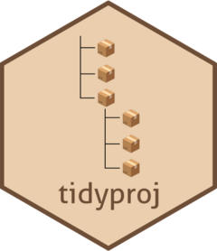

Seamless setup of a reproducible research project
Fabricio Almeida-Silva
VIB-UGent Center for Plant Systems Biology, Ghent University, Ghent, BelgiumSource:
vignettes/tidyproj_vignette.Rmd
tidyproj_vignette.RmdIntroduction and motivation
When scientists start working with large-scale data analysis, they typically learn their field-specific skills (e.g., analyzing sequencing data for bioinformaticians, modelling for mathematicians, etc.), but project management skills are largely overlooked. Over the years, this has culminated in what we now call “the reproducibility crisis”: researchers do not document their analyses and/or do not have a consistent way of organizing data, code, and products of each project. The goal of tidyproj is to provide researchers with a simple framework to set up a standard directory structure that can (and should) be used across projects. This way, researchers can easily switch across projects without having to ask themselves “where did I save that table for my paper?” or “where is the code I used to create this figure?”. When you establish a reproducible and consistent project structure with tidyproj, you help not only people who want to reproduce your work, but also your future self, as you can go back to a project after several months and easily find what you’re looking for.
Installation
You can install tidyproj from GitHub with the following code:
if(!requireNamespace('remotes', quietly = TRUE))
install.packages('remotes')
remotes::install_github("almeidasilvaf/tidyproj")Creating a standardized directory structure
To create tidyproj’s
standard project structure, you only need one function:
create_project_tree(). By default, this function assumes
you have already created an R Project (.Rproj file), so it
will create the project structure in the path returned by
here::here(). However, you can specify another root
directory.
Here, we will create the project structure using a temporary directory as the root directory.
# Create project structure in a temporary directory
rootdir <- file.path(tempdir(), "example_project")
rootdir
#> [1] "/tmp/RtmpsvLtZ5/example_project"
create_project_tree(rootdir)
#> /tmp/RtmpsvLtZ5/example_project
#> ├── README.md
#> ├── _quarto.yml
#> ├── bibliography.bib
#> ├── chapters
#> │ ├── appendices.qmd
#> │ ├── chapter_01.qmd
#> │ └── chapter_02.qmd
#> ├── code
#> ├── data
#> ├── index.qmd
#> └── products
#> ├── figs
#> ├── plots
#> ├── result_files
#> └── tablesThe function create_project_tree() creates 4 directories
(data, code,
chapters, and products), as well as a
README.md file. In the sections below, you will find what
each of them mean.
The data/ directory
The data/ directory is where you must store all input data you use in the project. For example, if you are a bioinformatician working on RNA-seq data that you obtained from a public database, you must include the gene expression matrices (e.g., as .tsv files) in this directory.
The code/ directory
The code/ directory is where you will store
.R files with utility code, including helper functions, and
code to create final (i.e., ‘polished’) figures and tables.
The chapters/ directory
This is where you will store you .qmd files with code
and text structured in chapters. Note that code chunks are not evaluated
by default (except for session information code). This is because most
real-world scientific projects contain heavy analyses with code chunks
that take a long time to run. While it is very important to have
evaluated code in these documentations, that is not always possible. At
the end of the day, it’s way better to have documented code that is not
evaluated than having no documentation at all. However, if your
.qmd file describes analyses that do not take a long time
to run, you can (and should) set eval = TRUE in the code
chunk options.
The products/ directory
This directory must contain all products you obtain during your analyses, which are classified in different categories:
plots: where all plots you create are stored. Plots can be stored as image files (e.g.,
.png,.pdf,.svg, etc) or as.rdafiles if you are used to working withggplotobjects. I strongly recommend saving plots as .rda files, so you can manipulate them later without having to rerun the code to create them. This is particularly useful if you want to modify aesthetics of yourggplotobjects (e.g., color, size, etc) or combine multiple ggplots into multiple panels to make a more complex figure.figs: where the final figures (the elegant and complex ones that will go to your paper) are stored. For example, here you can store a PDF figure that you created by combining several
ggplotobjects contained in the plots subdirectory.tables: where tables with summary statistics are stored. Avoid saving tables as
.xlsx(Excel) files. If you want to create an.xlsxfile with multiple tabs that represents your whole set of Supplementary Tables, you can do it, but keep the original tables you used for each tab as.csv/.tsv/.txtfiles.result_files: where files with important results are stored. These can be
.rdafiles with R objects (e.g., aDESeqobject from your differential gene expression analysis, anlmobject from a model fit, etc.) and/or files that cannot be stored in tabular format in the tables subdirectory (e.g., .nwk files representing phylogenies, software output with a very specific format, etc).
The README.md file
This file is where you will briefly summarize your project. It is prepopulated with mandatory content (project title and abstract), but you can add whatever kind of information you think is useful (e.g., publication DOI when the manuscript is published, external links, etc). This is what the default file looks like:
Creating new .qmd files
By default, tidyproj adds
two .qmd files to the chapters/ directory.
If you need more files, you can create them with the function
add_chapter().
# Create another .qmd file inside chapters/
file_name <- here::here(rootdir, "chapters", "chapter_03.qmd")
add_chapter(filename = file_name)
#> /tmp/RtmpsvLtZ5/example_project/chapters/chapter_03.qmdSession information
This document was created under the following conditions:
sessioninfo::session_info()
#> ─ Session info ───────────────────────────────────────────────────────────────
#> setting value
#> version R version 4.5.3 (2026-03-11)
#> os Ubuntu 24.04.3 LTS
#> system x86_64, linux-gnu
#> ui X11
#> language en
#> collate C.UTF-8
#> ctype C.UTF-8
#> tz UTC
#> date 2026-03-26
#> pandoc 3.1.11 @ /opt/hostedtoolcache/pandoc/3.1.11/x64/ (via rmarkdown)
#> quarto 1.9.36 @ /usr/local/bin/quarto
#>
#> ─ Packages ───────────────────────────────────────────────────────────────────
#> package * version date (UTC) lib source
#> BiocManager 1.30.27 2025-11-14 [1] RSPM
#> BiocStyle * 2.38.0 2025-10-29 [1] Bioconduc~
#> bookdown 0.46 2025-12-05 [1] RSPM
#> bslib 0.10.0 2026-01-26 [1] RSPM
#> cachem 1.1.0 2024-05-16 [1] RSPM
#> cli 3.6.5 2025-04-23 [1] RSPM
#> crayon 1.5.3 2024-06-20 [1] RSPM
#> desc 1.4.3 2023-12-10 [1] RSPM
#> digest 0.6.39 2025-11-19 [1] RSPM
#> evaluate 1.0.5 2025-08-27 [1] RSPM
#> fastmap 1.2.0 2024-05-15 [1] RSPM
#> fs 2.0.1 2026-03-24 [1] RSPM
#> glue 1.8.0 2024-09-30 [1] RSPM
#> here 1.0.2 2025-09-15 [1] RSPM
#> htmltools 0.5.9 2025-12-04 [1] RSPM
#> jquerylib 0.1.4 2021-04-26 [1] RSPM
#> jsonlite 2.0.0 2025-03-27 [1] RSPM
#> knitr 1.51 2025-12-20 [1] RSPM
#> lifecycle 1.0.5 2026-01-08 [1] RSPM
#> magrittr 2.0.4 2025-09-12 [1] RSPM
#> pillar 1.11.1 2025-09-17 [1] RSPM
#> pkgconfig 2.0.3 2019-09-22 [1] RSPM
#> pkgdown 2.2.0 2025-11-06 [1] any (@2.2.0)
#> R6 2.6.1 2025-02-15 [1] RSPM
#> ragg 1.5.2 2026-03-23 [1] RSPM
#> rlang 1.1.7 2026-01-09 [1] RSPM
#> rmarkdown 2.30 2025-09-28 [1] RSPM
#> rprojroot 2.1.1 2025-08-26 [1] RSPM
#> sass 0.4.10 2025-04-11 [1] RSPM
#> sessioninfo 1.2.3 2025-02-05 [1] RSPM
#> systemfonts 1.3.2 2026-03-05 [1] RSPM
#> textshaping 1.0.5 2026-03-06 [1] RSPM
#> tibble 3.3.1 2026-01-11 [1] RSPM
#> tidyproj * 0.99.0 2026-03-26 [1] local
#> vctrs 0.7.2 2026-03-21 [1] RSPM
#> xfun 0.57 2026-03-20 [1] RSPM
#> yaml 2.3.12 2025-12-10 [1] RSPM
#>
#> [1] /home/runner/work/_temp/Library
#> [2] /opt/R/4.5.3/lib/R/site-library
#> [3] /opt/R/4.5.3/lib/R/library
#> * ── Packages attached to the search path.
#>
#> ──────────────────────────────────────────────────────────────────────────────